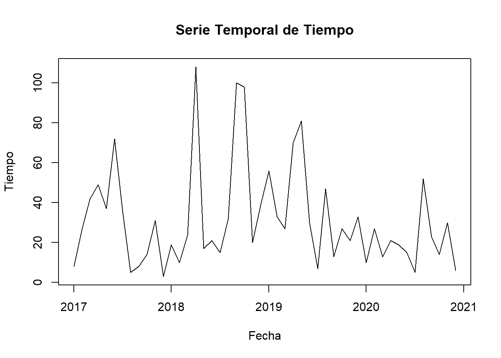
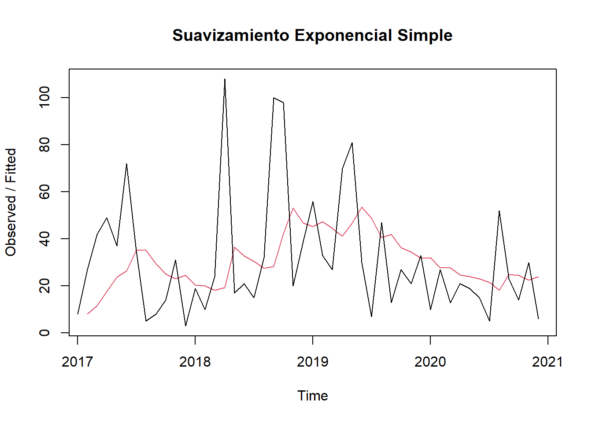
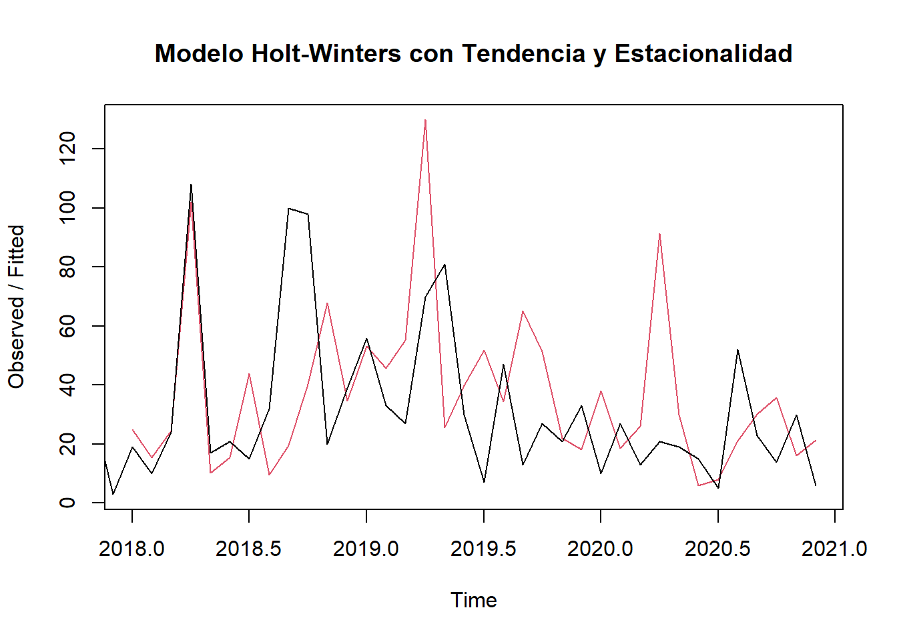
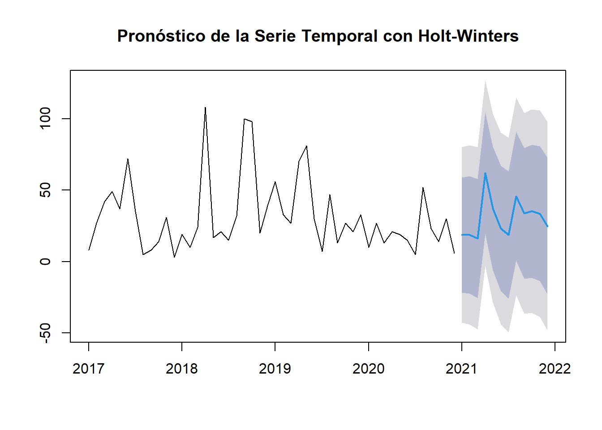

Chapter 5 Holt-Winters para analisis de tiempo
5.1 Introducción
La gestión eficiente del inventario es un pilar fundamental para el éxito en el competitivo mercado minorista actual. Un inventario excesivo genera costos de almacenamiento, obsolescencia y depreciación, mientras que un inventario insuficiente resulta en pérdidas de ventas, insatisfacción del cliente y daño a la imagen de la marca. Encontrar el equilibrio óptimo entre la oferta y la demanda es crucial para maximizar la rentabilidad y la eficiencia operativa.
Este informe se centra en el análisis de las series temporales de ventas de una empresa retail, con el propósito de pronosticar la demanda futura y, en consecuencia, optimizar la gestión de inventario. A través de la aplicación de técnicas estadísticas de series temporales, podemos identificar patrones, tendencias y estacionalidades en los datos históricos de ventas, lo que nos permite anticipar las fluctuaciones de la demanda y tomar decisiones informadas sobre la cantidad de productos a mantener en stock.
5.2 Metodología:
Se utilizó el método de Holt-Winters para el análisis y pronóstico de la demanda. Este método es particularmente adecuado para series temporales que presentan tanto tendencia como estacionalidad, características observadas en nuestros datos de ventas. El proceso incluyó los siguientes pasos:
Preparación de los datos: Se agregaron las cantidades vendidas por fecha, convirtiendo la información en una serie temporal.
Suavizamiento exponencial simple: Se aplicó inicialmente un suavizamiento exponencial simple para una primera aproximación al comportamiento de la serie.
Modelo Holt-Winters: Se implementó el modelo Holt-Winters, incorporando componentes de tendencia y estacionalidad para un ajuste más preciso.
Evaluación del modelo: Se calculó el error de suma de cuadrados (SSE) para evaluar la precisión del modelo.
Pronóstico: Se generaron pronósticos para los próximos 12 periodos.
5.3 Resultados
- Visualización de la serie: El gráfico inicial de la serie temporal de ventas ilustra la evolución de la cantidad de productos vendidos a lo largo del tiempo. Se observa una clara tendencia general al alza, lo que indica un crecimiento en la demanda a lo largo de los años. Además, se aprecia un patrón estacional repetitivo, con picos y valles que ocurren en periodos similares cada año. Esta estacionalidad sugiere la influencia de factores recurrentes, como temporadas de compras o eventos específicos, en el comportamiento de las ventas.
# Convertir los datos a un objeto de serie temporal
serie_tiempo <- ts(datos$quantity, start = c(2017, 1), end = c(2020, 12), frequency = 12)
# Visualizar la serie temporal
plot(serie_tiempo, main = "Serie Temporal de Tiempo", ylab = "Tiempo", xlab = "Fecha") * Suavizamiento exponencial simple: La aplicación del suavizamiento exponencial simple genera una línea suavizada que captura la tendencia general de la serie. Sin embargo, este método no considera la estacionalidad presente en los datos. Por lo tanto, la línea suavizada no refleja las fluctuaciones periódicas observadas en la serie original, subestimando los picos y sobrestimando los valles. Esto evidencia la necesidad de un modelo más sofisticado que incorpore la componente estacional.
# Suavizamiento exponencial simple
suavizado_simple <- HoltWinters(serie_tiempo, beta = FALSE, gamma = FALSE)
plot(suavizado_simple, main = "Suavizamiento Exponencial Simple")
- Modelo Holt-Winters: El modelo Holt-Winters, al incorporar componentes de tendencia y estacionalidad, se ajusta de manera significativamente más precisa a los datos observados. La línea ajustada del modelo sigue de cerca las fluctuaciones de la serie, capturando tanto la tendencia ascendente como los patrones estacionales. Esto indica que el modelo es capaz de representar el comportamiento histórico de las ventas con mayor fidelidad, lo que a su vez aumenta la confiabilidad de las predicciones generadas. Asimismo esto no es indicio que presentar mejores resultados, si no que más bien, visualmente el metodo de winters trata de adaptarse al comportamiento de la demanda.
# Aplicar el modelo Holt-Winters con componentes de tendencia y estacionalidad
modelo_holt_winters <- HoltWinters(serie_tiempo)
plot(modelo_holt_winters, main = "Modelo Holt-Winters con Tendencia y Estacionalidad")
- Evaluación del modelo: El modelo de winters se ve que se tiende a tomar una forma de picos y valles tratando de organizarse según la estacionalidad de los datos, en este sentido se puede ver que para ese tipo de datos puede ser mucho más eficaz que la suavización simple.
Para esto caso cabe resaltar que los datos de ventas tienen un comportamiento estable o perpetuo, es decir, no representa una estacionalidad marcada a lo largo del tiempo y la distribución de su forma es más homogenea, esto afecta al modelo de winters dado que no es un dataset para el que este modelo se halla pensado.
- Pronóstico a 12 periodos: El gráfico del pronóstico muestra la proyección de la demanda para los próximos 12 periodos, considerando tanto la tendencia ascendente como el patrón estacional identificado en los datos históricos. Las líneas azules representan el intervalo de confianza del pronóstico, indicando el rango dentro del cual se espera que se encuentren las ventas futuras con un cierto nivel de probabilidad. Este pronóstico proporciona una herramienta valiosa para la planificación de la gestión de inventario, permitiendo anticipar las fluctuaciones de la demanda y tomar decisiones informadas sobre la adquisición y el almacenamiento de productos.
# Calcular las métricas de precisión
rmse <- rmse(serie_tiempo, modelo_holt_winters$fitted)
mae <- mae(serie_tiempo, modelo_holt_winters$fitted)
mape <- mape(serie_tiempo, modelo_holt_winters$fitted) * 100
# Imprimir las métricas
cat("RMSE:", rmse, "\n")## RMSE: 36.73575## MAE: 27.51567## MAPE: 107.8621 %# Generar pronósticos para los próximos 12 períodos
pronostico <- forecast(modelo_holt_winters, h = 12)
plot(pronostico, main = "Pronóstico de la Serie Temporal con Holt-Winters")
5.4 Conclusiones y Recomendaciones:
El análisis de series temporales realizado mediante el modelo Holt-Winters ha demostrado ser una herramienta eficaz para pronosticar las ventas de un conjunto estacional. Pero así mismo, cuando se prueba sobre un dataset con datos más perpetuos, puede verse que le cuesta mucho ya que sobreestima el movimiento de la demanda.
A pesar de esto, podemos ver como las series de tiempo ha estudiado diversidad de comportamientos y esta totlamente comprobado que cada modelo es muy bueno en su campo y este punto debe respetarse.
El pronóstico generado para los próximos 12 periodos ofrece una visión anticipada de la demanda esperada, lo que permite una planificación más precisa y eficiente. En base a estos resultados.
5.5 Reflexión final
Este análisis demuestra el valor estratégico que aporta la ciencia de datos a la gestión de inventario en el sector retail. La capacidad de analizar grandes volúmenes de datos, identificar patrones complejos y generar pronósticos precisos, como se ha demostrado con la aplicación del modelo Holt-Winters, transforma la toma de decisiones de un enfoque reactivo a uno proactivo.
En un entorno cada vez más competitivo y dinámico, la ciencia de datos se convierte en una herramienta indispensable para anticipar las fluctuaciones de la demanda, optimizar los niveles de inventario y maximizar la eficiencia de la cadena de suministro. La inversión en herramientas y capacidades analíticas no solo mejora la gestión de inventario, sino que también impulsa la rentabilidad, la satisfacción del cliente y la ventaja competitiva en el mercado. A medida que la cantidad de datos disponibles continúa creciendo, el potencial de la ciencia de datos para optimizar las operaciones y la toma de decisiones estratégicas en el sector retail se amplía aún más. La adopción de estas técnicas no es simplemente una ventaja, sino una necesidad para las empresas que buscan prosperar en el futuro.